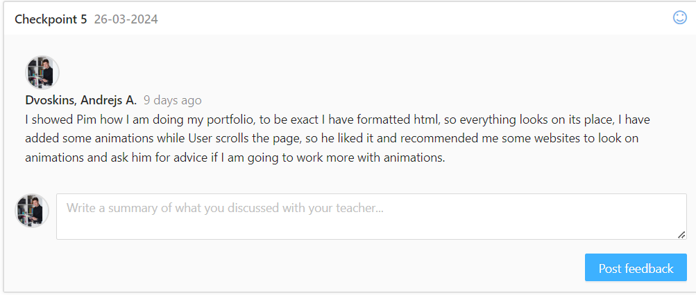

As part of personal leadership development, I actively seek feedback from teachers to ensure that I am progressing in the right direction. Regularly requesting feedback allows me to reflect on my work, identify areas for improvement, and make necessary adjustments to enhance my skills and knowledge. When seeking feedback, teachers often evaluate the design of my websites or provide advice on aspects where I may struggle, particularly in group projects. For example, when discussing design elements, teachers offer insights into layout, color schemes, and user experience to ensure that my websites effectively communicate the intended message and engage the audience. In group projects, I sometimes find it challenging to determine the best course of action or make decisions that align with the project goals. In such cases, teachers provide valuable guidance and advice to help me navigate through uncertainties and return to the right track. Their input helps me gain clarity and confidence in my decisions, ultimately contributing to the success of the project. By actively seeking and reflecting on feedback, I am able to leverage insights from teachers to refine my work, align with project objectives, and cultivate my personal leadership skills. This ongoing process of feedback and reflection enables me to continuously grow and evolve as a student and future professional.
For instance, I recently sought advice from a teacher regarding the design of my portfolio. While I had a clear thematic concept in mind, I struggled to translate it into an aesthetically appealing design. Armed with my prototypes and sketches, I approached the teacher for guidance. After reviewing my work, the teacher provided valuable insights and suggestions to enhance the visual appeal and user experience of my portfolio. They advised me on aspects such as color palettes, typography choices, and layout design to better align with the thematic concept while ensuring accessibility and readability. Additionally, the teacher offered practical tips on incorporating visual elements and interactive features to engage users effectively. Their feedback helped me refine my design approach and gave me a clearer direction on how to achieve my vision for the portfolio. By seeking advice from teachers, I was able to leverage their expertise and experience to elevate the quality of my portfolio design. Their guidance not only improved the overall aesthetics but also reinforced my understanding of design principles and best practices, empowering me to create a more compelling and user-friendly portfolio.
